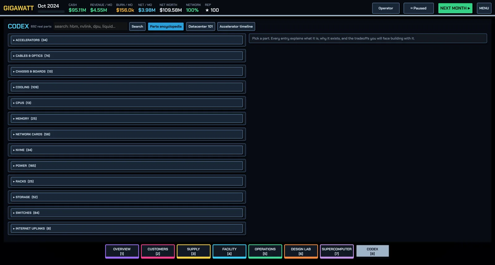

Glossary
Forty-one datacenter terms, one line each, alphabetical.

- Allocation — per-quarter caps on how many units of a constrained part (usually GPUs) you may buy; vendor relationships and frameworks raise yours.
- ATS (automatic transfer switch) — gear that moves hall load from the utility to your generators without human action; part of the N+1 chain.
- Bisection bandwidth — the total traffic rate a fabric can carry across its middle; the headline number for whether a cluster trains well.
- Burn-in — the soak test after rack installation (power-on, firmware, stress tests) that finds dead GPUs and optics before customers do.
- CDU (coolant distribution unit) — the pump-and-isolation box between a liquid-cooling plant and the cold plates on chips in DLC halls.
- Chiller — central plant that makes cold water for CRAHs and CDUs; paired with a tower or dry cooler that rejects heat to outside air.
- Cluster — online racks plus a network fabric wired into one machine that contracts are assigned to.
- Commissioning — the full bring-up of a rack (installation plus burn-in); its length is a policy choice in Operations.
- CRAH (computer-room air handler) — the fans-and-coil unit of air-cooled halls; pushes cold air through the floor and pulls hot air back.
- DLC (direct-to-chip liquid cooling) — coolant through cold plates on GPUs/CPUs; required beyond roughly 40 kW per rack.
- Easy Path — the button that signs a contract and orders, installs, deploys, clusters and assigns the hardware for you.
- Fabric — the leaf/spine network (switches and cables) that turns a group of racks into one cluster.
- Fat-tree — the classic multi-tier cluster topology; rail-optimized variants give each GPU its own leaf path.
- Genset — diesel or gas generator set that carries the hall through long utility outages.
- HBM (high-bandwidth memory) — stacked memory on accelerators; its capacity and bandwidth decide how big a model fits and how fast it serves.
- Heat rejection — cooling capacity in kW; must meet or exceed IT load or hardware fails roughly three times more often.
- Inference — serving a trained model to users; memory-bandwidth-bound, priced per million tokens.
- KV cache — per-request state that inference keeps in GPU memory alongside the weights; its size caps how many users you can batch.
- Lead time — months between ordering a part and holding it; the reason to order ahead of need.
- MFU (model FLOPS utilization) — the share of peak compute a training run actually achieves; low MFU usually blames the network.
- NIC (network interface card) — the host's scale-out port; rule of thumb is one per GPU for training, one per two for inference.
- NVLink — NVIDIA's scale-up interconnect (with NVSwitch), joining GPUs inside a rack into one memory domain at TB/s.
- N+1 redundancy — one more unit (generator, battery string, chiller) than strictly needed, so any single failure has zero customer impact.
- Oversubscription — the ratio of leaf downlink capacity to spine uplink capacity; 1:1 for training, 2–4:1 for inference.
- PPA (power purchase agreement) — a long contract for fixed MW at a fixed price from a plant, paid whether or not you draw it.
- PUE (power usage effectiveness) — total facility power ÷ IT power; 1.0 is perfect, 1.1–1.5 typical, and you pay the difference monthly.
- Rack density — kW per rack; the real physical limit of a hall (air ≈ 20–25 kW, RDHx toward 40, DLC beyond).
- Ramp window — the months after signing a contract to get serving (default about four); miss it and the customer walks.
- RDHx (rear-door heat exchanger) — a water coil on the rack's back door that cools exhaust air without plumbing the servers.
- Residual value — what a rack is still worth as it ages and generations pass; quick-sale pays a fraction of it.
- RMA (return merchandise authorization) — the months-long vendor repair path for a failed part when you have no spare on the shelf.
- Scale-out — InfiniBand/Ethernet networking between nodes at 25–100+ GB/s per GPU; carries data-parallel traffic.
- Scale-up — NVLink-class linking of GPUs inside a node or rack into one domain; carries model-parallel and MoE traffic.
- SLA (service-level agreement) — the availability a contract demands (commonly 95–99.5%); misses cost reputation and renewals.
- Spot market (GPU) — selling idle GPUs hour-by-hour at a floating price with no commitment; pre-emptible by any contract.
- Spot market (power) — buying electricity at the volatile utility rate instead of under a PPA.
- Take-or-pay — the PPA clause: you pay for the committed megawatts whether you use them or not; surplus is resold at a discount.
- Training — renting a coherent cluster to train a model; compute- and network-bound, priced per GPU-hour.
- Transformer / switchgear — the hall's power feed; steps utility voltage down and caps maximum IT load in kW.
- TTFT (time to first token) — how long an inference request waits before its first token; the latency number customers feel.
- UPS (uninterruptible power supply) — inverter plus battery (or flywheel) that rides through grid dips while generators start.
Related: the in-game Codex carries the full encyclopedia with per-part engineering notes.
Found a mistake or something missing? Edit this page on GitHub or ask in Discussions.